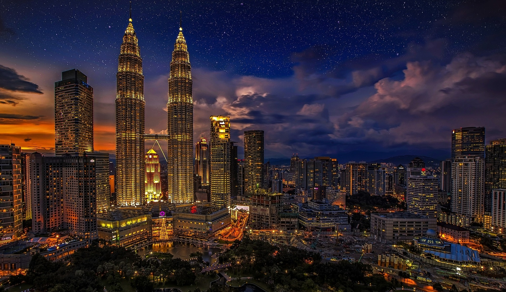
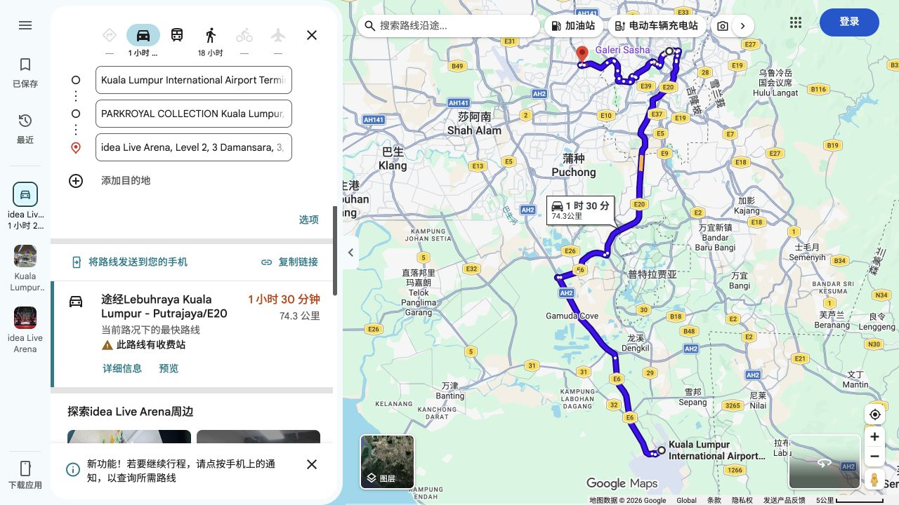

23:00
抵达吉隆坡 T1
下机、入境、取行李预留约 60—90 分钟。提前准备移动网络、酒店英文名和订单。
KUALA LUMPUR · MALAYSIA
白天走进老街，晚上走进音乐。
把时间留给喜欢的事，也留一点给休息。
以你的航班与演出为主线 · 所有时间均为当地时间 UTC+8

KUL T1 → 武吉免登酒店
李志／叁缺壹 · Idea Live Arena · 座票
KUL T1 起飞 · 目标 14:00—14:15 到机场
01 / YOUR ITINERARY
真正的游览时间约一天半。双子塔、老城和当地味道，都能放进这个周末。
两人共住一间双床房，机场接送各自安排。同行者是否参加景点或演出，按你们实际约定。
保留演出和机场时间，缩短户外活动。此为备选方案，并非天气预报。
11 月 13 日 — 14 日凌晨 / KUL T1 → 武吉免登
下机、入境、取行李预留约 60—90 分钟。提前准备移动网络、酒店英文名和订单。
机场到酒店约 58 公里，车程留 60—75 分钟。预算 RM80—120 / 车，按 App 指引找 T1 上车点；你的接送不默认与同行者合并。
这里是 11 月 14 日凌晨。房间必须从 13 日起订，并提前确认保留。同行者先到或后到，都按酒店确认的手续办理。
11 月 14 日 / KLCC → 酒店午休 → 3 Damansara
酒店或附近简单吃。前一晚凌晨才到，不安排清晨赶景点。
在 Suria KLCC 吃午饭，约 RM40—65 / 人。一个人一份主食即可，不默认同行者已经到达。
放下购物袋，给手机充电，留足看演出的体力。
MRT Kajang Line 往 Kwasa Damansara，到 TTDI 后步行约 14 分钟。全程留 60—75 分钟；场馆在 3 Damansara 商场 Level 2。
Ah Cheng Laksa，LG-42。亚参叻沙或咖喱叻沙，约 RM20—35 / 人。18:30—19:00 前往场馆安检、找座位。
散场时间未确定。另留 20—40 分钟等车和疏散，预算 RM40—70 / 车。阿罗街夜宵看营业与体力，不安排必须完成的夜景。
11 月 15 日 / 独立广场 → 中央市场 → 茨厂街 → T1
你先收好行李。若同行者仍要用房间，约好酒店规定退房时间内由谁办理，避免提前退掉整间房；退房后可问酒店寄存行李。
Oriental Kopi：咖椰吐司、半熟蛋、咖啡或拉茶，约 RM20—35 / 人。排队超过 15—20 分钟就换店。
苏丹阿都沙末大厦、河流交汇处，按外景安排，不把清真寺内部参观设为硬任务。
中央市场 10:00 开门。约 10:50 去老街与壁画区，顺路买 Beryl’s 巧克力，小件即可。
目标 12:15 左右准备出发。购物和排队都让位于返程，午餐可留到机场。
按国际航班预留约 3 小时。同行者的离开时间不改变你的机场时间。
按登机牌规定提前到登机口。旅途结束，音乐留在记忆里。
车程与餐饮费用均为规划估算；遇到排队、降雨或疲倦，可以直接跳过可选项目。
02 / GET YOUR BEARINGS
机场在南侧，酒店在市中心，场馆在西侧的八打灵再也。

本地位置图：机场 → 酒店 → 场馆。图内 74.3 km 是两段合计，三组距离见下方；路线以出发时导航为准。
已显示本地位置图。下方可复制地标名称与坐标，粘贴到你习惯的地图或打车 App。
预留 60—75 分钟
Grab 预算 RM80—120 / 车
演出日前往预留 45—75 分钟
Grab 预算 RM25—50 / 车
预留 60—90 分钟
Grab 预算 RM80—120 / 车
Kuala Lumpur International Airport Terminal 1, Sepang, Malaysia
纬度、经度：2.75427, 101.70466
PARKROYAL COLLECTION Kuala Lumpur, Jalan Sultan Ismail, Bukit Bintang, Kuala Lumpur, Malaysia
纬度、经度：3.1442552, 101.7122553
Idea Live Arena, Level 2, 3 Damansara, Petaling Jaya, Malaysia
纬度、经度：3.1304926, 101.6269413
Capri by Fraser Bukit Bintang, Kuala Lumpur, Malaysia
纬度、经度：3.1465123, 101.7152983
Apple / Google 地图入口都需要联网，海外地点覆盖与访问情况以实际 App 为准；不作为查看攻略的必要条件。
道路距离按已核实路线取近似值，不是直线距离。价格不是实时询价；过路费、雨天和散场需求可能增加费用。不同航班的机场接送不默认平分。
Bukit Bintang → Kajang Line 往 Kwasa Damansara → TTDI → 步行约 14 分钟到 3 Damansara。酒店到场馆全程留 60—75 分钟。雨大时可提前改乘 Grab；散场优先 Grab，预算 RM40—70 / 车，不依赖末班地铁。
场馆交通参考 ↗交通参考来自同场馆官方指南；入场要求以叁缺壹当场次通知为准。
03 / STAY TOGETHER
2 位成人 · 1 间房 · 11 月 13 日入住、15 日退房
预算沿用每间每晚 ¥1,000 以内。
Kuala Lumpur
距 Bukit Bintang MRT 约步行 5 分钟。吃饭、去演出、下午回房休息，都方便。
Bukit Bintang
更偏宽敞的公寓式体验，带小厨房。也可比较 Studio Deluxe Twin 的最终价格。
尚未预订，也未取得指定日期实时房价。以“2 位成人、1 间房”查询，订单必须明确写 Twin / 2 single beds，不能只填写床型偏好。比较含税总价、取消条款及旅游税是否已包含。
Journal 官网明确不提供两张单人床的标准 Twin。它的 Triple 是一张 Queen 加一张 Single，和这次双床要求不同，所以不再列为主推荐。
查看官方床型说明 ↗LATE CHECK-IN
你预计在 11 月 14 日 01:00—02:00 到店，房间仍需从 13 日起保留。两位住客都填护照英文姓名，向酒店确认先到者的入住、担保信用卡、押金，以及后到者登记与房卡领取方式。
24 小时前台不代表预订一定自动保留至凌晨，也不代表任一住客都能直接先入住。
We are two adults sharing one twin room with two separate single beds, arriving separately. My flight arrives at KLIA Terminal 1 at 23:00 on 13 November 2026, and I expect to reach the hotel around 01:00–02:00 on 14 November. Our reservation starts on 13 November for two nights. Please confirm that the room will be held for this late arrival and advise how the first guest can check in, including any payment card or deposit requirements, and how the second guest can register and collect a key.
04 / TWO PEOPLE, TWO ARRIVALS
你的航班和主行程保持固定。同行者的时间可以稍后补上，不需要为了等对方而推迟去机场。
以下记录仅保存在当前浏览器，不会自动同步给同行者。
05 / A TASTE OF KL
每顿选一份主食就够了。是否一起吃、费用怎么分，按实际同行情况安排。
NASI LEMAK
椰香米饭、参巴酱和配菜，是第一顿马来风味午餐的好选择。
Madam Kwan’s · Suria KLCC ↗KAYA TOAST & KOPI
再配半熟蛋，给老城散步一个慢悠悠的开头。
Oriental Kopi · 旧邮政总局 ↗ASAM / CURRY LAKSA
想吃酸辣鱼汤选亚参，喜欢椰香浓汤选咖喱。演出前在商场解决晚饭。
Ah Cheng Laksa · LG-42 ↗HOKKIEN MEE
偏浓郁的酱香粗面，也可以换一碗叉烧云吞面，放在武吉免登自由活动时。
Lot 10 Hutong 十号胡同 ↗Beryl’s 巧克力、白咖啡、BOH 茶包，或中央市场的小件蜡染。不用为了特产绕路。若返中国大陆，别带肉干、肉脯和鲜果。
06 / BEFORE YOU GO
0 / 8 项已完成
勾选记录保存在当前浏览器。
只计算房费。¥800 是试算输入，不是酒店报价；机场交通和餐饮不自动平分。
这是根据已知航班和演出安排制作的旅行计划，不是已完成的酒店、交通或景点预订。价格、余票、营业与入场规则请在出发前再次核实。
Idea Live Arena 官方地址双子塔开放与门票（普通外国成人周末当前公布 RM137）中央市场（当前每日 10:00—22:00）Grab 机场交通参考PARKROYAL 入住、担保与税费政策Capri 床型及入住 FAQ马来西亚入境要求（中国护照适用条件）MDAC 提交时间与豁免范围中国海关携带食品相关规定